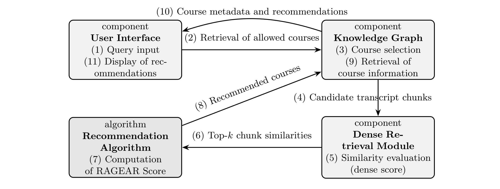
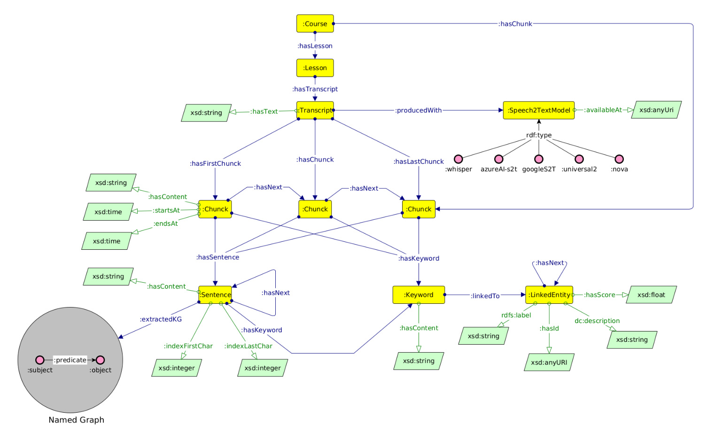
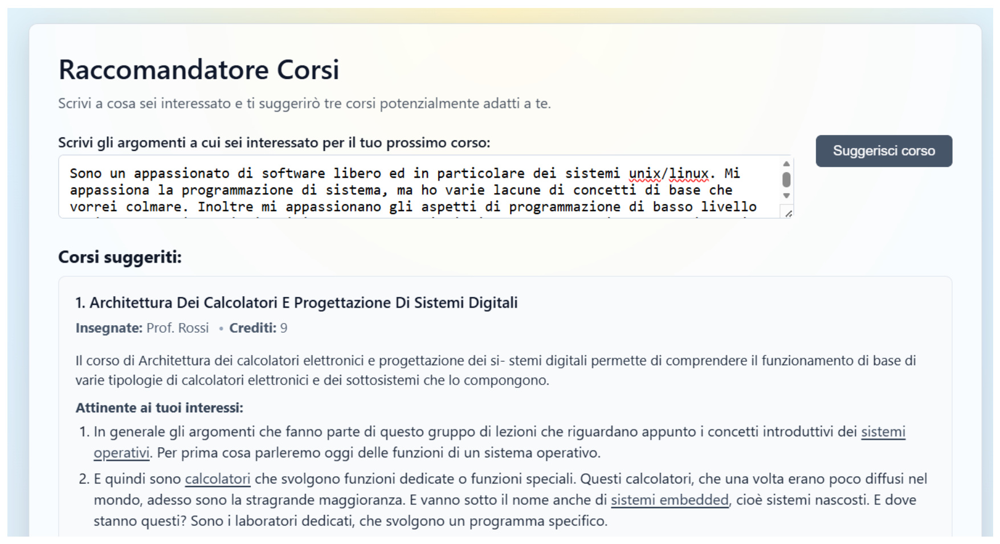
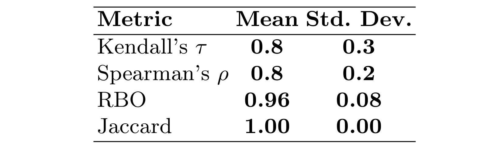
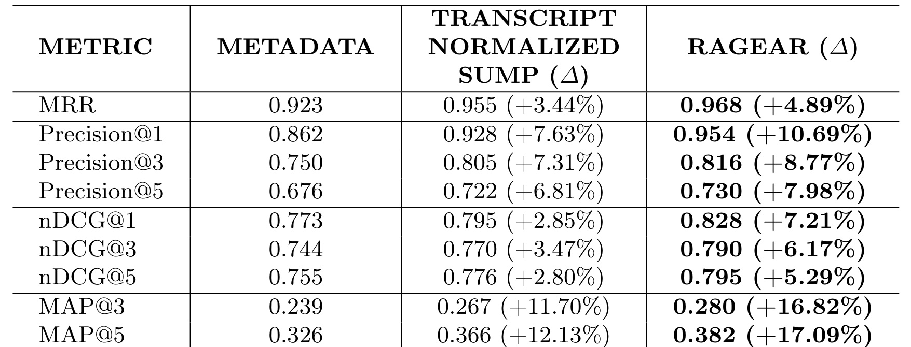

RAGEAR 是一篇面向高校课程推荐的神经符号推荐系统论文。论文入口是 arXiv:2605.26819，版本为 v1，提交时间为 2026-05-26。作者包括 Francesco Granata、Lorenzo Lamazzi、Misael Mongiovi、Francesco Poggi 和 Valeria Secchini；PDF 首页给出的第一作者主机构是意大利 University of Catania 的 Department of Mathematics and Computer Science，合作机构包括意大利 National Research Council 的 Institute for Cognitive Science and Technology。用户指定的本地目录名为“多校-RAGEAR”，但从论文首页看，最准确的机构描述应是“卡塔尼亚大学牵头，CNR-ISTC 合作”。代码和评测材料状态已核验：公开 GitHub 仓库为 fpoggi/RAGEAR，其中包含 ranking 计算、LLM 评估和指标计算脚本；不过仓库 README 也说明部分输入数据属于大学知识产权，需要授权后提供，因此可复现性不是完整开箱即用。
这篇论文的推荐算法主线并不是传统电商或内容平台里的点击率预估，而是“学生用自然语言表达学习兴趣，系统从课程库里推荐最合适课程”。它的关键点在于把课程推荐拆成两层：先用 dense retrieval 在完整课堂转录文本里找与查询语义相近的 chunk，再借助课程、课时、转录、chunk 之间的知识图谱结构，把 chunk 级证据传播成课程级排序。论文把这个系统命名为 RAGEAR，即 Retrieval-Augmented Graph-Enhanced Academic Recommender。
1. 背景和问题
高校课程推荐表面上像一个小规模推荐任务，因为论文实验里的课程目录只有 34 门课；但它真正困难的地方不是候选集大小，而是学生查询和官方课程描述之间存在非常强的语义错位。学生通常不会按课程大纲或教务系统里的标准词来表达需求。他可能会说“我想学可扩展在线服务”“我对低层系统编程有兴趣”“我想理解数据处理的法律含义”，而课程标题、摘要、学分、教师、学科分类里未必出现这些短语。只用课程元数据做向量检索时，系统容易找到主题大致相近的课程，却漏掉那些在某几节课中深入讲过相关概念的课程。
这类问题在在线大学场景尤其明显。在线课程通常保存了完整视频、转录文本和时间戳，这些材料比课程简介更细。转录文本包含教师讲例子时使用的具体术语、课堂推导、实际系统名、案例和专题展开。它们能把一门课的“真实教学内容”显露出来，而不是只依赖一两段官方描述。RAGEAR 的基本判断是：如果学生查询的是细粒度技能或概念，推荐系统应该先进入 lecture transcript 这个粒度，再回到 course 粒度排序。
但直接在转录 chunk 上做检索还不够。推荐最终要返回的是课程，不是碎片。一个 query 可能命中某门课里的多个 chunk，也可能只命中一节课里的一小段。简单把同一课程所有 chunk 相似度求和，会有两个风险。第一，长课程或转录更多的课程天然有更多被命中的机会。第二，某个偶然高分片段可能把课程推到前面，但这个片段并不代表整门课持续覆盖该主题。RAGEAR 试图解决的正是“如何把细粒度转录证据可靠地聚合到课程级推荐”。
论文把方案设计为神经和符号结合。神经部分负责语义匹配：把学生查询和转录 chunk 编成 dense embedding，用相似度找 top-k 片段。符号部分负责结构化语境：用 ontology-based Knowledge Graph 表示学生、study plan、课程、课时、转录、chunk、学分、学科分类、先修关系等对象。这样，系统既能利用转录语义证据，又能在图结构里知道每个 chunk 属于哪门课、哪节课、哪些课程满足学分或先修约束。
这也解释了论文为什么把实证评估聚焦在 ranking component，而不是把全部符号过滤也放进指标表。作者认为学分、study plan、学科分类、先修课等过滤一旦在知识图谱里表示清楚，就是确定性的约束处理；真正需要评估的是，在候选课程确定之后，RAGEAR 的 chunk 到 course 聚合函数是否比 metadata-only 检索和简单 SumP 聚合更能把相关课程排在前面。
还有一个现实动因是可解释性。选课推荐通常会影响学生的时间投入、学分规划和后续学习路径，不能只给一个黑盒相似度。RAGEAR 把支撑片段、课程元数据和结构化约束放在同一条链路里，使推荐结果能被教师、学生或教务人员追问：这门课为什么相关，证据来自哪些课时，是否只是偶然提到，是否满足培养方案。这个问题意识让论文比普通课程搜索更接近实际教务辅助系统。
从推荐算法角度看，这篇论文的贡献可以被理解成一种长文档检索后的结构感知聚合。它没有发明新的 embedding 模型，而是使用 multilingual-e5-large 做 chunk embedding；也没有声称知识图谱本身直接产生神奇排序，而是把 KG 用作“证据归属和传播骨架”。这点很重要：RAGEAR 的核心不是更复杂的向量模型，而是让 course、lesson、chunk 的层级关系进入排序分数，使排序不只看总相似度，还看高排名证据和跨 lesson 覆盖。
如果把它放回更宽的推荐系统谱系，RAGEAR 更接近“检索后重排和聚合”而不是“端到端监督推荐”。很多课程推荐工作依赖历史成绩、选课记录、协同过滤或技能标签，但这些信号在新学生、新课程和跨学校环境中往往稀疏，而且可能把学生过去的路径固化成未来推荐。RAGEAR 选择从课堂内容本身出发，等于把推荐依据从“别人怎么选”转到“这门课实际讲了什么”。这对冷启动课程、低交互数据的高校场景特别有意义，因为学校可以拥有丰富教学材料，却未必拥有足够干净的点击、收藏、退课、成绩反馈数据。
另一个值得注意的背景是，课程推荐里的“相关”并不等同于普通搜索里的关键词匹配。学生问的是学习目标，系统返回的是一门需要投入数周甚至一学期的课程。相关性应该同时包含主题匹配、覆盖深度、课程结构稳定性和可解释证据。RAGEAR 的 lesson coverage 虽然只是一个简单项，但它隐含的判断是：如果一门课真正适合某个学习目标，相关概念不应该只在一段转录里偶然出现，而应当在课程若干 lesson 中形成可持续教学线索。这也是它区别于普通 passage retrieval 的地方。
2. 方法
2.1 从查询到课程排序的总体链路
RAGEAR 的系统链路可以按四个组件理解：User Interface、Knowledge Graph、Dense Retrieval Module 和 Recommendation Algorithm。用户界面收集学生的自然语言查询；知识图谱根据课程体系和结构化约束提供允许检索或需要上下文化的课程集合；dense retrieval 模块对候选课程关联的 transcript chunks 进行语义相似度计算；推荐算法再把 top-k chunk 的相似度、rank 和 lesson 分布聚合成课程级分数。

Figure 1 的价值在于把论文里分散的“检索增强”和“图增强”放到同一条信息流里。学生先在 UI 输入 query，KG 不是在最后才补充解释，而是在早期就参与“allowed courses retrieval”和“course selection”。这意味着如果学生属于某个 study plan，或者查询需要被学分、学科领域、先修关系限制，候选课程集合可以先经过符号层约束。随后 KG 把候选课程关联到 transcript chunks，dense retrieval 模块只在这些 chunk 上计算相似度。这个顺序比“全库向量检索后再强行过滤”更符合教务推荐，因为有些课程即使语义相似，也可能因先修、培养方案或学分限制不适合推荐。
图里 Recommendation Algorithm 接收 top-k chunk similarities，然后计算 RAGEAR Score，再把 recommended courses 回传给 KG 以取课程元数据和推荐解释，最终由 UI 展示。这一环节说明 RAGEAR 的解释能力来自两个来源：一是推荐分数本身由 chunk 证据构成，二是 KG 能把 chunk 证据重新挂回课程、课时、教师、学分和描述。对用户来说，系统不只是说“这门课与你的查询相似”，还可以展示支持这条结论的转录片段。
这里需要注意一个边界：论文里的 UI 是轻量 web interface，并不是大型学生画像系统。它收集自由文本查询，返回三门课程和支撑片段。真正的方法贡献仍然在检索和聚合，不在交互设计。把 UI 放进架构图的意义，是让读者看到推荐结果如何被解释给学生，而不是让 UI 成为独立创新点。
2.2 数据构建和 chunk 级 dense retrieval
论文数据来自两所意大利在线大学，覆盖一个计算机科学与工程本科项目和两个硕士项目里的 34 门课程。课程集合不大，但教学材料很细：共 1165 个视频讲座，约 821 小时的录制内容。所有视频用 Whisper Turbo 转录，并保留 word-level timestamps。这些时间戳让每个文本 chunk 可以对齐回原视频区间，为后续推荐解释提供基础。
转录文本先经过 spaCy 做句子切分，再组合成语义上较连贯、长度受控的 chunks。每个 chunk 都关联到 course、lesson、transcript、text、index 和时间元数据。这样做的意义不是单纯为了向量库好检索，而是为了后面图结构聚合可用：如果系统不知道 chunk 属于哪节 lesson，就无法判断某门课的证据是分布在多节课里，还是只集中在一个偶然片段。
检索阶段，论文使用 multilingual-e5-large sentence-transformer 模型编码 transcript chunks，也用同一个模型编码学生查询。给定查询 q，dense retrieval 返回 top-200 chunks，每个 chunk 有相似度分数。论文记这个分数为 $S_c^q$，其中 $c$ 是 chunk。top-200 以外的 chunk 在聚合时分数视为 0。这个设计把检索模型和聚合函数解耦：后续比较 Transcript Normalized SumP 和 RAGEAR 时，两者使用同一批 chunk 分数，所以差异主要来自课程级聚合方式。
这里的 top-200 是一个工程选择。它足够大，可以覆盖多门课程和多节课的候选证据；同时又有限制，避免把低相似度噪声全部带入课程聚合。对课程推荐而言，这比只拿 top-10 更稳，因为一个查询可能对应多个概念，某门真正相关课程的几个支撑片段可能不都排在最前面。另一方面，top-200 也会带来噪声，因此 RAGEAR 的 rank 项和 lesson coverage 项就是为了区分“高质量且分布合理的证据”和“低排名零散证据”。
这一步还有一个容易忽略的实现含义：chunk 的切分策略会影响整个系统。chunk 太短，单个片段可能缺少上下文，embedding 容易只抓到局部词；chunk 太长，又会把多个主题混在一起，导致相似度分数难以解释。论文没有把 chunking 做成核心创新，但它通过 sentence segmentation 和长度约束保证片段仍然语义连贯，并保留 start/end timestamps。对真实系统复现而言，这个元数据链条很重要，因为推荐解释最好能回到视频区间，而不是只给学生一段脱离课程位置的文本。
2.3 知识图谱如何承接课程、课时、转录和 chunk
RAGEAR 的 KG 有两个功能。第一，它表示教务结构，包括 Student、StudyPlan、Course、credits、academic discipline、prerequisites、instructors 等对象和关系。比如 Student 通过 :hasStudyPlan 连到 StudyPlan，StudyPlan 通过 :containsCourse 连到课程。这样系统可以基于培养方案、学分、学科分类或先修关系做过滤和上下文化。第二，它表示教学内容结构，即 Course 到 Lesson、Transcript、Chunk 的层级关系，使 chunk 级检索结果能被传播回课程。

Figure 2 展示的不是完整教务系统，而是与教学内容密切相关的 ontology module。图中 Course 通过 hasLesson、hasChunk 等关系连接到 Lesson、Transcript 和 Chunk；Transcript 连接到 Speech2TextModel，说明转录来源；Chunk 进一步和 Sentence、Keyword、LinkedEntity 以及 Named Graph 相关联。这个结构解释了为什么 RAGEAR 不是简单“向量库加课程 ID”。它把 chunk 放进一个可推理、可过滤、可解释的图骨架里。
对聚合函数最关键的是 Course → Lesson → Chunk 层级。GlobalEvidence 只需要知道 chunk 属于哪门 course；RankedEvidence 需要知道 chunk 在检索排序里的 rank；LessonCoverage 则必须知道 chunk 属于哪节 lesson，并且要统计一个课程内有多少 lesson 被检索证据覆盖。如果没有 KG 或等价结构化索引，系统很难稳定地计算 lesson-level coverage，也难以把课程学分、先修、study plan 这类符号约束和转录检索接起来。
论文还提到 KG 采用 eXtreme Design 方法构建，由领域专家提出 competency questions，例如识别学生可选课程、查询课程学分和教师、定位某个概念出现在哪些转录片段。这个细节说明 KG 不是为了论文术语而存在，而是围绕教务推荐系统需要回答的问题逐步设计。论文还包含一个基于 Named Graph 的 sentence-level semantic enrichment 层，用 AMR-to-FRED 生成，但作者明确说明这个语义增强层没有作为本轮实验的直接 ranking signal，主要用于未来解释、概念探索和语义检查。
从工程角度看，KG 在这里承担的是“可控连接层”。如果只把 chunk 文本和 course_id 放进向量数据库，也能做 SumP 聚合；但当系统要支持 study plan、credits、academic disciplines、prerequisites、instructor、lesson timestamps 这些结构化对象时，单一向量库会很快变成一堆外部 join。RAGEAR 把这些关系提前建模，使推荐链路可以先过滤、再检索、再聚合、再解释。这个模式对任何需要合规约束或专家知识的推荐场景都有借鉴意义，比如企业内部培训、医疗继续教育、专业认证课程。
2.4 RAGEAR 的课程级聚合分数
RAGEAR 的核心公式是把 chunk 级证据变成 course 级推荐分数。给定查询 $q$，dense retrieval 得到 top-200 chunk 集合 $R_q$。对每门课程 $C$，最终推荐分数写成三个组件的乘积：
符号解释：$RS(C,q)$ 是课程 $C$ 面对查询 $q$ 的最终推荐分数；$GE$ 是 global evidence，衡量这门课占据总检索相似度的比例；$RE$ 是 ranked evidence，衡量这门课的证据是否出现在检索列表前部；$LC$ 是 lesson coverage，衡量证据是否分布在多节 lesson 中。乘法结构意味着三个条件需要同时成立：只有总证据多、rank 靠前、覆盖分布合理的课程，才能获得较高最终分数。
第一项 GlobalEvidence 是最接近传统 SumP 聚合的部分：
符号解释：$c$ 表示 transcript chunk；$C \cap R_q$ 表示属于课程 $C$ 且出现在 top-200 检索集合里的 chunk；$S_c^q$ 是 chunk $c$ 与查询 $q$ 的 dense similarity；分母是所有 top-200 chunk 的相似度总和。这个比例越大，说明 top-200 检索证据越集中在课程 $C$ 上。论文把这一项单独作为 Transcript Normalized SumP baseline，因为它本质上就是把同一课程的 retrieved chunk similarity 求和后归一化。
这项的优点是直观，能避免不同查询整体相似度尺度不同的问题；缺点是它不关心命中 chunk 的排序位置，也不关心这些 chunk 是否分布在多节课。一个课程如果有很多低排名 chunk，也可能拿到不错的 global share；另一个课程如果有少数极高排名片段但总量不大，可能被低估。因此 RAGEAR 加入第二项。
第二项 RankedEvidence 写成：
符号解释：$rank(c)$ 是 chunk $c$ 在 top-200 检索列表中的位置，1 表示最相似；$t_q$ 是查询中识别出的 relevant concepts 数量，作为平滑因子；分母是 top-200 rank 权重的归一化项。这个公式让靠前 chunk 的贡献明显更大，靠后的 chunk 贡献递减。$t_q$ 越大，rank 权重差异会被平滑一些，直觉上是多概念查询可能需要更宽的证据覆盖，不应只依赖最前几个 chunk。
第三项 LessonCoverage 先定义每节 lesson 的最佳 rank：
符号解释：$l$ 表示课程中的一节 lesson；$l \cap R_q$ 是该 lesson 中进入 top-200 的 chunk 集合；$rank(l)$ 取这节 lesson 内最靠前的 retrieved chunk 的 rank。如果某节课完全没有 chunk 出现在 $R_q$，它后续贡献为 0。这个定义只取最佳 rank，而不是 lesson 内所有 chunk 的和，避免某节课因为被切成许多片段而重复放大。
在此基础上，LessonCoverage 定义为：
符号解释：$L_C$ 是课程 $C$ 的 lesson 集合；$|L_C|$ 是课程包含的 lesson 数量；$\delta(l,q)$ 是 lesson $l$ 对查询 $q$ 的贡献。除以 $|L_C|$ 是为了降低长课程天然 lesson 更多带来的偏置。这个项奖励相关证据跨多节 lesson 出现，而不是集中在某一个孤立片段里。
其中 $\delta(l,q)$ 为：
符号解释：如果某节 lesson 至少有一个 chunk 出现在 top-200，它会根据该 lesson 最佳 chunk 的 rank 贡献一个倒数权重；如果没有命中，则贡献 0。这个设计把“覆盖范围”和“覆盖质量”合在一起：多个 lesson 都有较靠前证据时，课程分数更高；只有一节课偶然命中时，coverage 会受限。
从推荐系统角度看，三个组件分别对应三个不同的证据问题。GlobalEvidence 问“这门课拿到了多少总相似度”；RankedEvidence 问“它的证据是不是排得靠前”；LessonCoverage 问“证据是不是跨课程结构稳定出现”。乘法组合有一个副作用：任一项很低都会压低总分。这在课程推荐里是合理的，因为作者希望推荐的是一门整体相关的课程，而不是某个讲座片段相关的课程。但乘法也可能让一些专门课程吃亏：如果一门课确实只有一两节课覆盖学生查询的特定专题，却恰好是学生真正需要的内容，RAGEAR 可能因为 lesson coverage 低而低估它。
这个分数还有一个隐含假设：课程内 lesson 的数量和组织方式足够稳定，能够代表主题覆盖范围。不同老师可能把同一主题拆成很多短课，也可能压缩成一节长课；不同学校的视频切分粒度也不一致。论文通过除以 $|L_C|$ 尝试减少长课程偏置，但 lesson granularity 本身仍会影响 LC。实际部署时，如果课程之间 lesson 数差异很大，可能需要把 coverage 从“lesson 数”改成“有效教学时长”“主题模块数”或“标准化章节数”，否则 coverage 项可能混入内容组织风格的偏差。
乘法聚合也让分数解释更清楚。若某门课 GlobalEvidence 高但 RankedEvidence 低，说明它有很多弱相关片段，可能是泛主题课程；若 RankedEvidence 高但 LessonCoverage 低，说明它有一个非常匹配的局部片段，但整门课未必围绕该目标展开；若 LessonCoverage 高但 GlobalEvidence 低，说明覆盖面广但每个片段相似度都不强。这种分解可以作为 UI 解释的一部分，而论文当前 UI 主要展示课程元数据和支撑 chunk，还没有把三个分量直接暴露给学生或导师。
2.5 用户界面和可解释输出
RAGEAR 的 UI 是一个轻量 web 层。学生输入自然语言兴趣描述，系统通过 HTTP POST 请求调用后端组件，然后展示三门推荐课程。每门课程显示课程标题、教师、学分、课程描述和支持推荐的 transcript chunks。论文强调这个界面是 intentionally minimal，也就是尽量不让交互层干扰底层评估任务。

Figure 3 中的例子是意大利语查询，学生表达自己对 free software、unix/linux、system programming 和 low-level programming 的兴趣。输出区域展示推荐课程、教师、学分、课程描述，以及“Attinente ai tuoi interessi”下面的支撑片段。这个 UI 示例说明 RAGEAR 推荐结果不是纯 course title 列表，而是把推荐原因放在转录证据上。对教育推荐来说，这很关键：学生和导师需要知道为什么一门课被推荐，尤其当课程标题和学生 query 不完全同词时。
不过这个界面也暴露了论文当前系统的适用范围。它更像一个课程探索和选课辅助工具，而不是完整学习路径规划器。它返回的是短列表和证据片段，没有展示长期学习目标、冲突课表、学生已修课程表现、容量限制或毕业要求中的复杂约束。论文把 KG 设计成可承接这些约束，但本轮实验主要验证 ranking，不等于已经验证了完整教务决策流程。
3. 实验结果
3.1 数据、baseline 和评价协议
论文的实验目标有两个。第一，验证完整 lecture transcripts 是否比 course-level metadata 更适合作为课程推荐证据。第二，验证 RAGEAR aggregation 是否比简单 transcript-based normalized SumP 更能把相关课程排到前面。为了隔离这两个问题，作者比较了三种方法。
Metadata baseline 只使用课程级信息，包括 title、abstract 和可用 metadata。它用 dense retrieval 直接比较学生查询和课程表示，然后按相似度排序。这代表传统课程目录检索思路。Transcript Normalized SumP 使用完整课程转录，把 transcript 切成 chunks 后做 dense retrieval，再把属于同一课程的 retrieved chunk similarity 求和并除以所有 retrieved chunk similarity 总和。Full RAGEAR 使用同样的 chunk 检索分数，但增加 rank 权重和 lesson coverage。因此 SumP 和 RAGEAR 的差别不在 embedding 模型，而在 chunk 证据如何传播到 course level。
评价查询是 student-like queries，描述学生的学术兴趣、学习目标或选课需求。论文说明这些查询既包含 metadata-friendly 的需求，也包含只有在课堂内容里才会出现的细粒度概念。每个方法对每个 query 返回一个 course ranking。评估者看到 student query、course title 以及由 LLM 基于课程全部 lecture transcripts 生成的摘要，然后判断课程是否 relevant。如果不相关，score 为 0；如果相关，再给 1 到 5 的 graded relevance，其中 3 以上被二值化为 relevant，用于 Precision 和 MAP。
作者报告 MRR、Precision@k、MAP@k 和 nDCG@k，重点 cut-off 是 1、3、5，因为系统实际展示的是短推荐列表。MRR 关注第一个相关课程出现得多早；Precision@k 关注前 k 个里有多少 relevant；MAP@k 关注 relevant items 在前 k 排名中的平均精度；nDCG@k 使用 graded relevance，能反映高相关课程是否排在更靠前位置。这个指标组合适合课程推荐场景，因为学生通常不会浏览几十门课，top-1 和 top-3 的质量比长尾排序更重要。
3.2 人类标注与 LLM judge 的一致性
作者没有直接把 LLM judge 当作真值，而是先用小规模人类标注验证一致性。人类评估选取 20 个 query，并考虑三种 recommender 的 ranked outputs，得到 60 个 unique query-recommender output pairs。每位参与者评估 6 个 pairs，包括两个 metadata baseline、两个 Transcript Normalized SumP、两个 full RAGEAR 输出。20 位参与者合计产生 120 次人类评估，每个 pair 有两个独立人类标注。随后，同一批 pairs 交给 LLM judge 评估。论文报告所有 LLM-based assessments 使用 GPT-4.1 nano。

Table 1 的四个指标都偏高。Kendall's tau 均值为 0.8，标准差 0.3；Spearman's rho 均值为 0.8，标准差 0.2；normalized RBO 均值 0.96，标准差 0.08；Jaccard 达到 1.00，标准差 0.00。Kendall 和 Spearman 说明排序和分数层面的相关性较强；RBO 说明排名前部集合高度相似；Jaccard 为 1.00 说明在 relevance score 大于等于 3 的二值相关集合上，LLM 和人类判断完全重合。
这个结果支持作者把 LLM judge 用于更大规模离线评估，但不能过度解读。首先，人类样本只有 20 个 query 和 120 次评估，规模不大。其次，评估者看到的是课程 title 和 LLM 生成的 transcript summary，而不是学生真实选课后的满意度。再次，用一个 LLM 生成课程摘要，再用 LLM judge 打分，可能存在评估链路内部风格一致带来的偏乐观。论文相对谨慎地把后续 152-query 评估称为 controlled proxy，而不是替代真实学生或导师的长期 user study。
3.3 大规模离线评测结果
在验证 LLM judge 与人类标注有较强一致性后，作者把同一评估协议扩展到 152 个 student-like queries。每个 query 下，三种方法都返回课程排序，LLM judge 按 0 到 5 的 graded relevance 打分。Table 2 是论文最重要的定量结果。

Table 2 显示，两个 transcript-based 方法整体都优于 metadata-only baseline。Metadata 的 Precision@1 是 0.862，Transcript Normalized SumP 提升到 0.928，RAGEAR 进一步提升到 0.954。nDCG@5 从 Metadata 的 0.755 提升到 SumP 的 0.776，再到 RAGEAR 的 0.795。MAP@5 从 0.326 提升到 0.366 和 0.382。这个趋势说明 lecture transcripts 确实提供了课程级 metadata 捕捉不到的细粒度教学内容。
RAGEAR 相对 metadata baseline 的增益尤其集中在 top-ranked recommendations。Precision@1 相对提升 10.69%，nDCG@1 相对提升 7.21%，MAP@5 相对提升 17.09%，MRR 从 0.923 提升到 0.968。对一个只给学生展示三门课程的系统来说，这些 top-position 指标比总体平均更有意义。它说明 RAGEAR 更擅长把最相关课程放到第一位，而不只是让相关课程出现在列表某处。
更关键的是 RAGEAR 与 Transcript Normalized SumP 的对比。两者用同一批 transcript chunks 和 dense similarity，所以提升不能归因于更强 embedding 模型。RAGEAR 的 MRR 从 SumP 的 0.955 提升到 0.968，Precision@1 从 0.928 提升到 0.954，nDCG@1 从 0.795 提升到 0.828，MAP@5 从 0.366 提升到 0.382。这个差距虽不如 transcript 相对 metadata 的差距大，但它直接支持论文核心主张：在长转录课程推荐里，只算相似度总份额不够，rank position 和 lesson distribution 能带来额外排序质量。
从指标细节看，RAGEAR 的提升在 Precision@3 和 Precision@5 上相对更小。Precision@3 从 SumP 的 0.805 到 RAGEAR 的 0.816，Precision@5 从 0.722 到 0.730。这说明 RAGEAR 对“前几名的顺序”改善更明显，对“前五个里相关课程总数”的改善较温和。这个现象符合算法设计：RankedEvidence 强化 top-ranked chunks，LessonCoverage 强化稳定证据，它们更可能改变第一名和前三名的排序，而不是创造大量新的相关候选。
论文还明确指出实验是 offline ranking comparison，而不是完整线上学生试用。符号过滤在 KG 中确定性完成，但没有被作为单独实验指标展开；LLM judge 扩大了评估规模，但不能替代真实学生或导师的纵向研究；课程集合也只覆盖两所在线大学的计算机相关项目。因此，Table 2 能证明 RAGEAR 聚合函数在这个受控数据集上优于 baseline，但还不能证明它在所有高校、所有学科和真实选课压力下都稳定有效。
3.4 可复现性和代码状态
论文脚注给出的 GitHub 仓库可访问，仓库包含三个核心脚本：01.compute_ranking_chunks.py 用于从 chunk similarity 输入计算推荐 ranking；02.evaluate_question_course_llm.py 用于对 query-course pairs 做 LLM 评估；03.evaluate_metrics.py 用于计算 ranking metrics。README 还列出输入输出目录，例如 data/01.input_similarity_scores/chunk_results.json、data/02.output_llm_evaluations/ 和 data/03.output_ranking_metrics/。
但仓库也说明部分 input data 属于大学知识产权，不能直接随仓库分发，需要授权提供。对复现而言，这意味着读者可以看到流程和脚本，但如果没有原始 transcript chunks、课程元数据、query-course 输入和 LLM secret，就无法完全复现实验表格。论文正文也说明 lecture transcripts 因版权和机构约束未公开。这个状态在教育场景可以理解，但需要在读论文时明确：RAGEAR 的方法和评测流程是透明的，数据开放程度有限。
4. 总结
4.1 我的判断
RAGEAR 的优点是把一个容易被做成“向量检索 demo”的课程推荐问题，拆成了更合理的证据传播问题。课程推荐的最终对象是 course，但真正回答学生兴趣的证据往往在 lecture transcript chunk 中。论文没有停留在“把课程转录放进向量库”这一层，而是进一步利用 Course-Lesson-Chunk 层级结构做聚合，尤其用 lesson coverage 抑制单个偶然片段的过度影响。这种设计对教育推荐、企业培训课程推荐、内部知识库课程检索都有参考价值。
它的局限也比较清楚。第一，课程规模只有 34 门，虽然转录内容丰富，但候选集仍然较小，不能直接推断到上千门课程的大学全量目录。第二，评估主要依赖 LLM proxy，尽管有小规模人类一致性验证，但真实学生的选课满意度、完成率和后续学习收益没有被验证。第三，KG 的符号过滤能力是系统卖点之一，却没有通过单独实验展示复杂约束下的推荐效果。第四，公开仓库不包含完整受限数据，复现者很难独立确认 Table 2。
4.2 工程启发与复现建议
如果把 RAGEAR 思路迁移到真实推荐系统，第一步不是先改 embedding 模型，而是把候选对象和证据片段之间的层级关系建模清楚。对课程是 Course-Lesson-Chunk；对技术文档可能是 Product-Document-Section-Paragraph；对视频库可能是 Series-Episode-Segment。只有层级结构明确，才谈得上 coverage、ranked evidence 和对象级聚合。
第二，聚合函数需要结合业务目标调整。RAGEAR 的 LessonCoverage 奖励跨 lesson 的广泛覆盖，适合推荐整门课。但如果目标是“找一节课中某个专题的学习片段”，则 lesson coverage 可能反而会惩罚专门内容。复现时应先判断推荐对象是“完整课程”还是“局部资源”，再决定 coverage 项的方向和权重。
第三，评估协议需要尽量避开同源偏差。论文已经做人类和 LLM 一致性验证，这是好的；但如果课程摘要由 LLM 生成、相关性也由 LLM 判断，就需要额外检查摘要是否遗漏原始转录里的关键信息。更稳的做法是加入教师、教务顾问或目标学生群体的盲评，并把 LLM proxy 只用于扩大样本。
4.3 后续跟进
后续我会优先关注三件事。第一，看作者是否扩展到更大的课程目录和非计算机学科，因为不同学科的转录风格、课程结构和 query 表达方式差异很大。第二，看公开仓库是否补充可匿名化的 toy transcript 或 synthetic course corpus，这会显著提升方法可复现性。第三，看 KG 的 semantic enrichment layer 是否真正进入解释或概念探索功能；目前这层还没有参与 ranking，如果未来能把概念级图谱和 chunk evidence 结合起来，RAGEAR 才会从“图结构聚合”进一步走向“语义图解释”。
总体上，这篇论文的价值不在于提出一个复杂到难以落地的新模型，而在于把长文本检索后的推荐聚合做得更符合课程结构。它提醒我们：在有完整内容材料的教育推荐里，metadata-only baseline 往往不够；但 transcript retrieval 也不能只把 chunk 分数粗暴相加。真正值得保留的设计，是用结构化图谱回答“证据属于哪里、分布在哪里、是否足以代表整个推荐对象”。